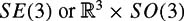
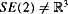
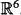

|
| |||||||||||||
|
|
||
In most cases, we can model robots as rigid bodies, articulated chains, or combinations of these two. Some common robots and representations of their configuration spaces are given in table 3.1.
|
Type of robot |
Representation of Q |
|---|---|
|
Mobile robot translating in the plane |
|
|
Mobile robot translating and rotating in the plane |
|
|
Rigid body translating in the three-space |
|
|
A spacecraft |
 |
|
An n-joint revolute arm |
Tn |
|
A planar mobile robot with an attached n-joint arm |
SE(2) × Tn |
When designing a motion planner, it is often important to understand the underlying structure of the robot's configuration space. In particular, we note the following.
S1 × S1 ×···× S1 (n times) = T n, the n-dimensional torus
S1 × S1 ×···× S1 (n times) ≠ Sn, the n-dimensional sphere in
S1 × S1 × S1 ≠ SO(3)


It is sometimes important to know whether a manifold is compact. The manifolds Sn, T n, and SO(n) are all compact, as are all of their direct products. The manifolds and SE(n) are not compact, and therefore is not compact, regardless of whether or not the manifold is compact.
Despite their differences, all of these configuration spaces have an important similarity. When equipped with an atlas, each is a differentiable manifold. In particular,
and SO(2) are one-dimensional manifolds;
, SE(2) and SO(3) are three-dimensional manifolds;
, T 6 and SE(3) are six-dimensional manifolds.
Thus, for example, all of , SE(2), and SO(3) can be represented locally by a set of three coordinates.
|
|
||
|